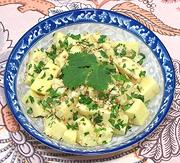

|
Shan Tofu SaladBurma - Shan - Tohu Thoke | ||||
| Serves: Effort: Sched: DoAhead: |
4 salad ** 15 min Must |
This refreshing salad is made pretty much as given by Naomi Duguid (Burma p51) as it is not wise to meddle much with something so simple and elegant. See also Comments. | |||
|
1 ------- tt tt ------- 1 2 1-1/2 1 1 ------- |
# --- --- cl t T T t --- |
Shan Tofu (1) -- Garnish Cilantro Leaves Toasted Sesame (2) -- Dressing Garlic Soy Sauce Rice Vinegar (3) Shallot Oil (4) Salt ----------------- |
Do-Ahead
|